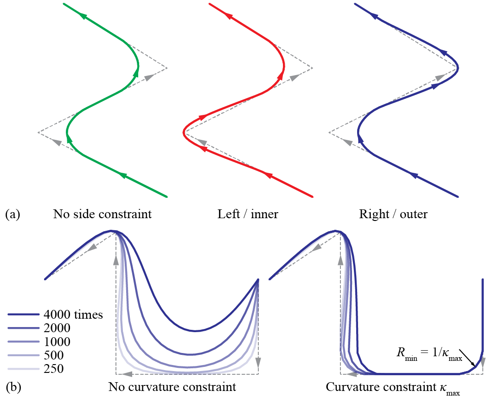
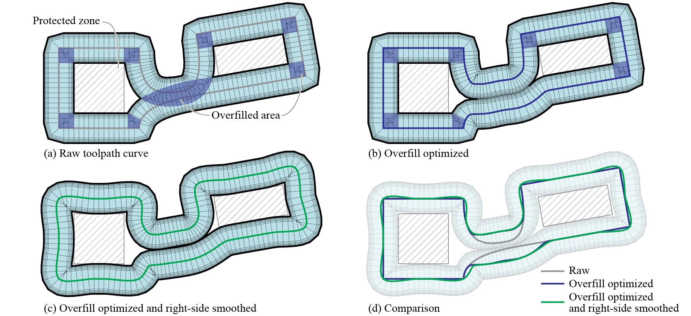
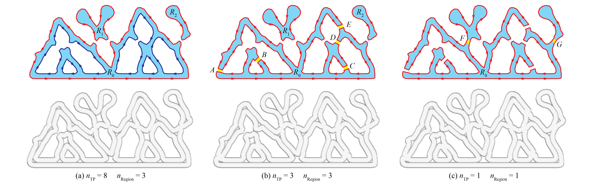

Layer-level optimizations
Smoothing
To have clean surfaces we would like to avoid sharp turns in the Toolpath. 
Smooth Toolpath smoothes a polyline Toolpath (see Polyline Toolpath) through Laplacian smoothing iterations.

Smooth toolpath: (a) side constraints; (b) side + curvature constraints
The time and strength of smoothing can be modulated. Two optional constraints are provided.
-
Side constraint specifies that the polylines can only deform to one of the two sides (left or right). For Toolpaths organized as regions, this is handy if the inside or the outside of the regions has to be protected.
-
Curvature constraint stops the smoothing of a vertex if it reaches the designated curvature. This feature preserves the overall shape of a polyline even if sharp turns need more smoothing iterations.
Example File
5. Layer-Level Optimizations → (1) Smooth Toolpath
Overfill optimization

Overfill Optimization deals with another type of overfill. When two parts of a polyline Toolpath (see Polyline Toolpath) are too close to each other, Overfill Optimization pulls them apart using an iterative algorithm. Parts of the Toolpath can be locked in this process if needed.

Effect of clearance in overfill optimization

Example of a layer featuring two rectangular protected zones after overfill optimization and smoothing. The protected zones are not affected since the smoothing is constrained to the right side
It is recommended to perform Smooth Toolpath after Overfill Optimization.
Example File
5. Layer-Level Optimizations → (2) Overfill Optimization
Simplify and merge regions
To prepare a Continuous Toolpath with less stops-and-starts, we would favor a Toolpath with less curves per layer. For a Toolpath organized as regions, we provide two options for reducing the number of curves.
-
Simplify Regionsimplifies a region by joining adjacent curves using U-turns or crossings at closest locations. Connections between inner walls will be prioritized to minimize visible changes. The number of regions per layer will not change. -
Merge Regionsjoin adjacent regions by connecting the outer walls at closest locations. The total number of inner walls per layer will not change.

(a) A porous layer; (b) after Simplify Region; (c) then after Merge Regions (1)
- Image adapted from: Y. Zhi, H. Chai, T. Teng, and M. Akbarzadeh, “Automated toolpath design of 3D concrete printing structural components,” Additive Manufacturing, p. 104662, 2025.
The two operations can be performed in either order. In certion occasions, you might want to perform only one of them. The connections will be straight lines, therefore Smooth Toolpath might be needed after simplifying and merging regions.
Example File
5. Layer-Level Optimizations → (3) Simplify and Merge Regions
Align seams
Seam defects of the closed curves are more prominent in large-format material extrusion. 
Align Seams considers three criteria for ideal seam locations.
-
Seams should be aligned across layers, if possible.
-
Seams should be placed where they are less visible. This can be done by placing them near the center of the layer.
-
Seam points should have moderate local overhangs (see Local Overhang). If not, the starting segments might fall off the body.
The location of the seam points also affect the result of 
Continuous Printing (see Continuous printing). In that process, the seam point of the first layer in each continuous patch is preserved and the rest are aligned iteratively.
Example File
5. Layer-Level Optimizations → (4) Align Seams